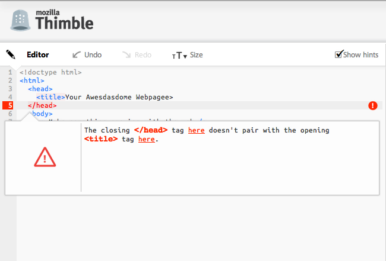
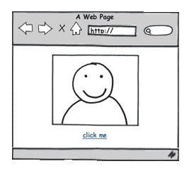
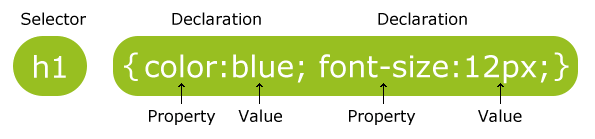
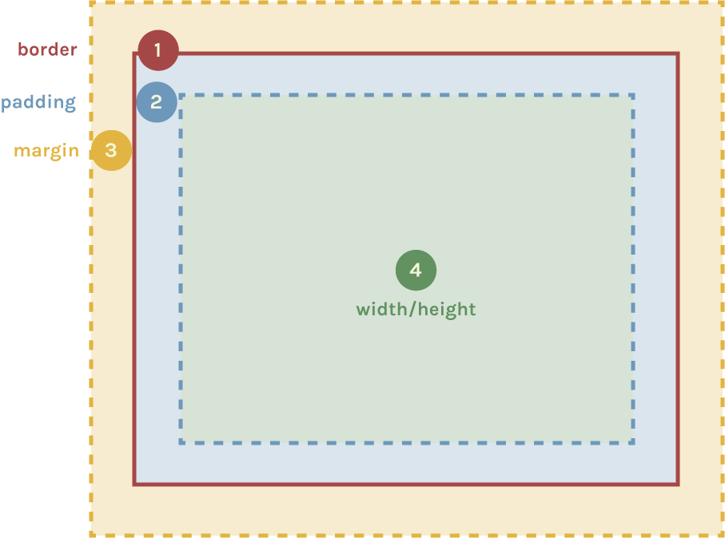

Although there are plenty of good text editors out there, none will help you learn as you go. Today we'll be using Mozilla's Thimble, a text editor that allows you to see errors as you type HTML and CSS.

Foundations of the Web
A basic webpage
A webpage is mainly built using 3 web languages:
HTML (Hypertext Markup Language)
is the markup language.
CSS (Cascading Style Sheets)
is the style sheet language.
JavaScript
is the programming language.

It should define the content.
It should define the presentation
It should define behaviour.
Dive into HTML
The content layer
What is HTML?
HTML was created for web browsers to easily read (not humans).
Tags can be "nested" within other tags, like this:
<tag><tag></tag></tag>
Practice writing a head and body tag nested inside of a html tag with me here:
Remember: The innermost tag must be closed before trying to open up a new tag.
This would be incorrect: <html><head><body></html></head></body>
HTML tags
Tags can be "nested" within other tags, like this:
<tag><tag></tag></tag>
Now where does the title tag get nested? Practice here:
Remember: The innermost tag must be closed before trying to open up a new tag.
This would be incorrect: <html><head><title></html></head></title>
HTML in a web browser
If you ever forget the basic tags needed to build a basic webpage, the blank Thimble editor is available to use.
HTML in a web browser
But remember: HTML tags are like the beams of a house -- they denote structure, not content.)
So if I view barebones.html in a web browser, I don't see anything interesting yet...
If Chrome is not your default web browser, right-click and select the "open with..." option.
HTML in a web browser
But I can right-click and select View Page Source to see what the HTML is to confirm that it's not a blank file.
(I suggest that you do this yourself any time you see something you like so you can reverse-engineer it.)
Sidenote: HTML Document Types
What about the 1st line?
<!DOCTYPE html>
This is a Document Type declaration. DOCTYPE indicates to the web browser what version of HTML the file is.
(Consider how old versions of Microsoft Office or Photoshop have problems opening files that were created in later versions of the software.)
For example, it could be an older document type like the ones below, or the newer "HTML5" one that we're using above.
<!DOCTYPE HTML PUBLIC "-//W3C//DTD HTML 4.01//EN"
"http://www.w3.org/TR/html4/strict.dtd">
<!DOCTYPE html PUBLIC "-//W3C//DTD XHTML 1.1//EN"
"http://www.w3.org/TR/xhtml11/DTD/xhtml11.dtd">
HTML content
(If HTML tags are the beams of a house, you still need to put up walls and put in furniture for it to be liveable.)
The human-viewable content of a HTML tag goes in between the opening and closing tags like this:
<tag>Content</tag>
<!DOCTYPE html>
<html>
<head>
<title>Home</title>
</head>
<body>
You are currently looking at index.html.
</body>
</html>
HTML content
The human-viewable content of a HTML tag goes in between the opening and closing tags like this:
<tag>Content</tag>
Practice writing a body tag with some human-viewable content here:
<head> vs <body>
Using a copy of barebones.html, I'm going to edit it to answer the below questions and prepare you for the following exercise you'll do on your own time.
What happens when I change the content in the <title> tag?
click here to show answer...
It will update the browser tab/window name.
What's the difference between putting a tag in-between the <head> tag versus the <body> tag?
click here to show answer...
<head> is for "meta" instructions that the browser will use to render content differently such as the tab title, or the character set to use when displaying a Japanese website, or links to external CSS or JS files. <body> should be used for all the content that actually gets displayed in the main part of the web browser.
Read about the h1 tag in thimble by clicking on the orange question mark
Try changing the title to "This is my cool page"
Try publishing the page
View how the display has changed in the right (preview) panel.
Explore some of the HTML tags listed on the next slide by adding them to your page.
Exercise #1 - Simple HTML tags
(Don't forget that viewable content goes in-between opening and closing tag pairs. Notice how Sublime Text will hint at you when/where you might not have closed a tag.)
Hierarchy
<hl>, <h2>, etc to <h6> - heading levels 1 to 6 <p> - paragraph
Text Formatting
<b> or <strong> - bold <i> or <em> - italics or emphasis <center> - centered
Section Formatting
<blockquote> - indented block of code
Input & Forms
<button> - clickable button <textarea> - multiline text area for user input
You can practice writing some of these tags in the area below:
Exercise #1 - Exploration Questions
What are acceptable tags that lend well to being nested and what should never be nested?
How is whitespace treated? What happens when you use multiple spaces or line breaks?
Got more questions?
Post them to this Google Moderator: http://goo.gl/mod/c4cm (You'll need to be signed into your Gmail or other Google account.)
Going deeper
Get to know HTML even better
Void (or empty) HTML Tags
Void tags don't format content -- instead they are used to render or embed objects in our page.
These tags do not come in pairs like h1 or p tags. You only type the tag once.
In some versions of HTML (specifically XHTML... remember DOCTYPE?) they "self-close" with a back slash (/) immediately before the left angled bracket (>). The most often used example of this is the <br /> tag used to create a line break.
This text <br>goes over<br>several lines.
This text goes over several lines.
Void (or empty) HTML Tags
Void tags
<hr>– horizontal rule <br> or <br /> - line break <input> or <input /> - text input boxes <img> or <img /> - an image *We'll get to this one very soon.
Text between opening & closing tags define content.
Void HTML tags render special objects that are sometimes sort of like content or seem structural depending on the void tag.
Consider the img tag. Not very exciting right?
Attributes
Sometimes we need to define data that we don't see right away but it's used by the browser to help render special content like hyperlinks, images, or video.
Here's that same img tag but now it's using a tag attribute to tell my webpage where to find a source image:
Remember, it's not<img>http://goo.gl/7eSU5</img>
Working with images
Let's look at that again: images are an example of a void tagwith an attribute.
<img src="http://goo.gl/7eSU5" />
src is the attribute
http://goo.gl/7eSU5 is the value of that attribute Values are typically surrounded by single or double quotes since occassionally values may contain spaces.
With an img tag, the value of the src attribute tells the browser what the url source of our image is.
Working with images
Tags can have more than one attribute, some required (like src) and others are optional:
width and height tell the browser what dimension to display the image at. (This is useful so the page doesn't jump around when loading very large images, or while on a very slow internet connection such as dial-up or 2G/3G. Also useful to know that width/height values don't necessarily have to match the image's actual width/height.)
For example, without width and height attributes, the browser displays image at original size.
<img src="http://goo.gl/7eSU5" />
Now with a manipulated width and height (about 50% smaller):
alt is alternative text to display to visually impaired web visitors using screen readers. It also shows up when there's a "broken image" due to typos or moved files. (Technically, it's required to be "valid" HTML markup which is why you might see alt="" often used.)
Working with images
In the exercises/2_WORKING_WITH_IMAGES folder, there's an index.html file and 3 images of various types.
To make your web development life easier, turn on the option to see the file extension type in Explorer (Windows instructions) or Finder (Mac instructions).
File type advantages for your reference:
gif - smaller file size when used for line art, charts, and images with minimal colour variation
jpg - smaller file size when used for photographs with lots of rich colours or gradients
png - larger file size but has best quality and is great for images with transparent backgrounds
http://ladieslearningcode.com is the value of that attribute
And remember that the clickable text goes in between the opening and closing a tags.
Exercise #2 (10-15 minutes)
Continue using index.html from the 2_WORKING_WITH_IMAGES folder in Sublime Text.
Create a text link using the <a> tag that points to "http://ladieslearningcode.com".
Using your knowledge of the <a> tag, try to create a clickable image using both the <img> and <a> tags. Clicking on the image should open up "http://ladieslearningcode.com". (Hint: This involves nested HTML tags.)
Make sure to save index.html after changes have been made (Ctrl/Cmd+S) and before confirming your edits in Chrome.
As time goes on, it has become easier and easier to embed multimedia content into websites.
From YouTube, you can find an Embed Code to put into your website (click on "Share" button below video, then "Embed") and YouTube's servers do all the rest of the work via the iframe tag.
And don't forget the "view source" option of your web browser!
CSS basics
Adding some style to your pages
Why use CSS?
Seperates content (text) from presentation (text colour).
The "cascading" part of CSS means that it (should) help avoid redundancy in styling your web documents.
Inline CSS using the style attribute
The styleattribute can be added to any visible HTML tag.
Using selectors to apply CSS
Here's the same result but using CSS selectors.
The <style> tag (placed between the <head> tags) is where CSS commonly goes.
CSS selectors and properties
Here's a CSS declaration dissected:

A basicselector will match its HTML tag name. In this case, all content that is a <h1> will be applied this style. (We'll get into more complex ones later.)
A property is a special label for some visual aspect of the selector such as color or size. You can see a list of them in this cheatsheet.
The property value is specific to the property type. For example, color properties accept colour values like blue or #FFFF00. font-size properties accept units of measurements like 12px (where "px" stands for pixels).
CSS selectors and properties
Here's a CSS declaration dissected:
Use curly braces ({}) to hold a list of the property:value sets.
You can define multiple property:value sets but you must end each one with a semi-colon (;).
Solve the riddle: Changing the page's background colour
Let's add this to the style tag in the head. You can use any colour you want:
body {
background: red;
}
Changing the font colour
Now the text is a bit hard to read on the gray background. Because the <body> tag is the highest possible visible HTML tag, the body selector will also allow us to target the font color on the entire page.
body { background-color: gray; color: white; }
Changing the font family
The web has a number of fonts that are considered "web safe". Some of the most used fonts are:
Arial
Verdana
Times New Roman
Georgia
Courier
Let's add a bit of contrast to our headers by using the Courier font on them.
Not all fonts are installed on all computers so it's recommended that you use a list of fonts. If the first font in the list isn't available, it will try to use the next.
(Notice how the font-family for the headers are still Courier? That's the "cascading" part of Cascading Style Sheets in action. Inline styles take precedence, then innermost tags, then outer tags.)
Changing the font size
Font sizes are typically defined in pixels (px) or "ems" (em).
20px
45px
0.5em
1em
Headers have default font-sizes defined by the browser. Let's override them.
Most HTML elements on a webpage look like this to the browser:
This is the same but visualized differently:

Example: Let's make our links look more button-like
To add a border you need to set 3 properties: border-weight, border-style, and border-color.
You can define them seperately, or using shorthand.
Note: CSS comments use the format /* comment */
Example: Let's make our links look more button-like
To add padding you set 4 properties: padding-top, padding-left, padding-bottom, and padding-left.
You can define them seperately, or using shorthand (in a clockwise direction).
Example: Let's make our links look more button-like
Add a background colour and change the font colour.
To get rid of the underline, use the text-decoration property.
Example: Let's make our links look more button-like
To add margins you set 4 properties: margin-top, margin-left, margin-bottom, and margin-left.
You can define them seperately, or using shorthand (in a clockwise direction).
Example: Let's make our links look more button-like
Here's the final button code!
Advanced topic: To get it looking even more like a button, use the border-radius property. (We won't get into browser pre-fixes today but do know that newer CSS features require you to re-state the property for each browser vendor.)
CSS interactions & pseudo selectors
CSS is also able to handle some basic UI interactions in our sites, such as allowing a mouse over or "hover" state on various elements. This is frequently done with items such as links.
As part of your selector, you need to use the :hoverpseudo selector.
CSS classes
Wait! What happens when we add another link to the page and it's not part of our navigation?
Putting all the styles inline wouldn't be wise...
Now that's a lot of CSS! What if you change you mind and decide that the background color should be blue now? Plus you can't apply pseudo selectors like :hover inline.
CSS classes
If you know that several elements are going to have similiar styles, use CSS classes! Once you define one CSS class, you can apply it over and over again!
Use a period (.) to define CSS selectors that are classes.
e.g. .nav_button
Then apply that class to any element using the class attribute.
e.g. class="nav_button"
Let's apply a "nav_button" CSS class to our current navigation links:
External CSS
Instead of duplicating your <style> content for every webpage, make one single CSS document ending with a .css extension and link to it in the <head> tag instead of (or in addition to) a <style> tag.
body {
background-color: black;
color: white;
font-family: Helvetica, Arial, sans-serif;
}
h1 {
font-family: Georgia, "Times New Roman", serif;
}
Exercise #4 (20 minutes)
Use this time to apply CSS to your 3-page website.
Update your navigation in index.html to look more button-like.
Create a single styles.css file and link to this external stylesheet from all 3 webpages using the <link> tag. Consolidate all of your CSS into this external stylesheet.
If you've got extra time, try out some new CSS properties from the cheatsheet and other resources listed on the CSS resources slide.
Layout is one of the most challenging things to do in CSS because it requires you to think about the whole picture and plan ahead.
To creating a standard 2-column layout requires us to give dimensions to some of our content, and position it accordingly.
Generic Container Tags
Sometimes content you might want to group together (and treat differently with CSS) shouldn't be defined as a h1 or h2 or even a p paragraph. There are two kinds of generic containers available:
span - An inline container.
Good for highlighting keywords like I did in this bullet.
div - An block container.
Much like a paragraph, it creates a line break above and below to create a box.
<div>I'm a div!</div>
<div>I'm another div!</div>
I'm a div!
I'm another div!
Semantic HTML Tags
Historically, when making non-trivial websites, it required nesting lots of div tags within div tags (within div tags!) like this:
With HTML5, there are an increasing number of semantic tags that better describe larger blocks of content such as: header, footer, nav, section, article, and aside.
It is important to know the overall width of your site so you can select column widths for the main <section> and the <aside> sidebar that will make sense.
Let's go ahead and set the <header> and <footer> to be 960 pixels wide. We'll add a gray border too, so we can see what's going on.
PRO TIP: Historically, padding wrecked havoc on our math. To avoid headaches, use the box-sizing property for every website you make to make sure your math adds up.
/* apply a natural box layout model to all elements */
* {
-moz-box-sizing: border-box;
-webkit-box-sizing: border-box;
box-sizing: border-box;
}
Getting columns to be side-by-side
Block-style HTML containers like <p>, <div>, <section>, and <aside> automatically start on a new line.
To get our two columns to be side-by-side, use the float property. Values can be left, right, or none.
CSS classes are great when you want to re-apply the same style to multiple HTML elements but sometimes you need to only target an HTML container once. This is where an ID is useful.
Use a hash (#) to define CSS selectors that are IDs.
e.g. #centered_on_page
Use the id attribute to apply the styles to that element.
e.g. id="centered_on_page"
Important! You should only have one instance of an ID per page. Any more can cause unexpected things to happen with your CSS -- and later, JavaScript.
CSS id's
Let's add #centered_on_page and apply the id to the div container immediately after the opening <body> tag in index.html.
#centered_on_page {
margin: 0 auto 0 auto;
width: 960px;
}
<body>
<div id="centered_on_page">
</div>
</body>
Custom colours
Often, the CSS colours "gray", "blue", or "purple" are boring and limiting. You can define your own custom colour using hex colours.
h1 {
color: #026873; /* a unique shade of blue */
}
Use this time to apply CSS to your web page. Review the afternoon's slides and experiment with some of the properties on the cheatsheet. If you're stuck, here are some suggestions:
Apply widths and floats to <section> and <aside> to make a standard 2-column layout.
Apply some custom colours to your text in any of your web pages.
Research the background-image property and add a background image to webpages.
Bonus: Try out web fonts
When you get bored of Arial and Georgia, go to the Google Web Fonts website and find a font that you like.
Click on the "Quick-use" button for that font.
Scroll down to find the supplied <link> tag. Copy and paste it into your own HTML file.
Integrate the fonts into your CSS by using their supplied font-family. For example, add their font-family to your h1 CSS selector.
Make sure your files are saved and view your web page in the browser. New fonts are that easy!